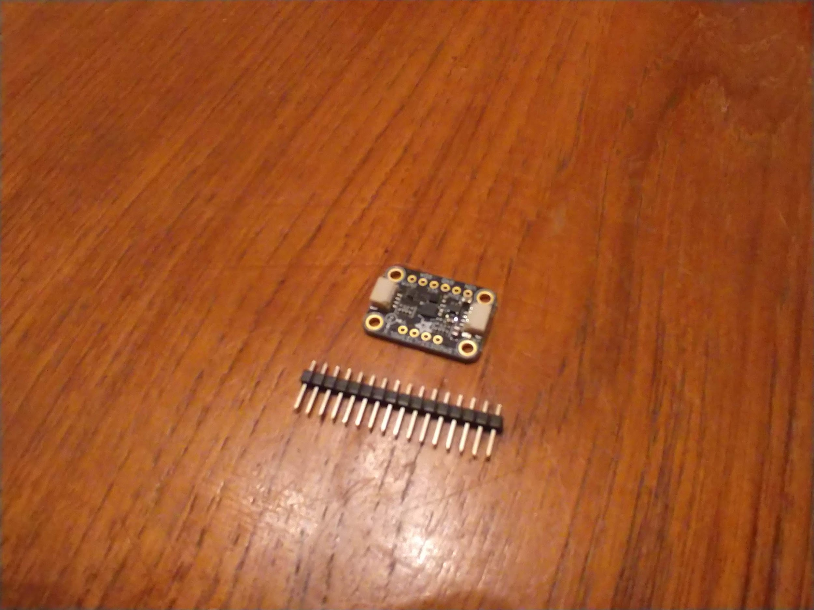
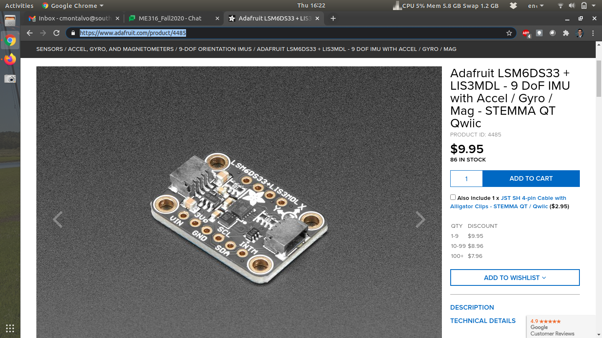
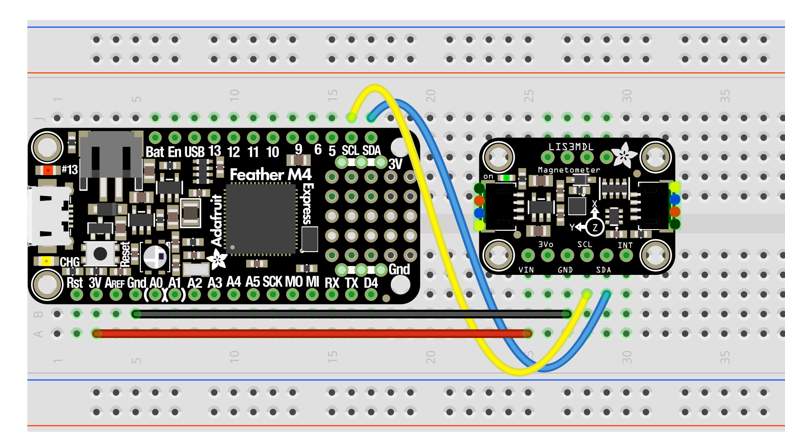
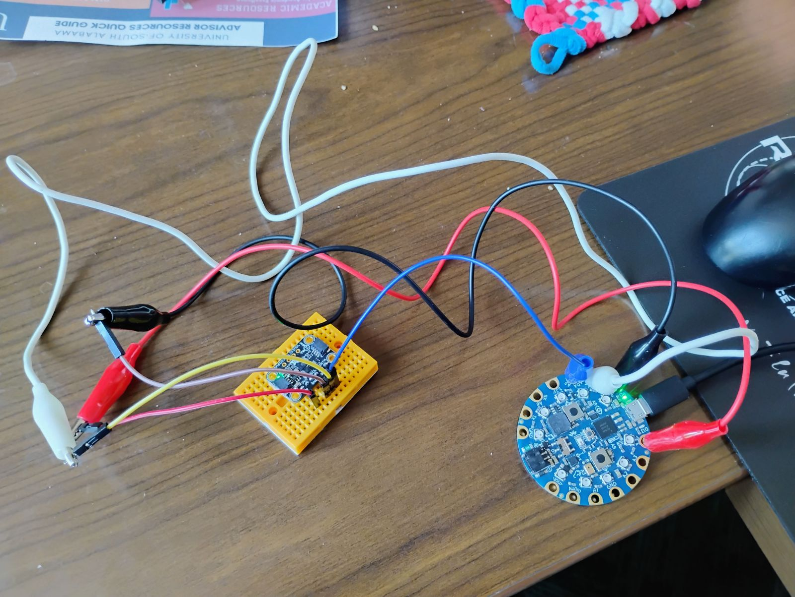
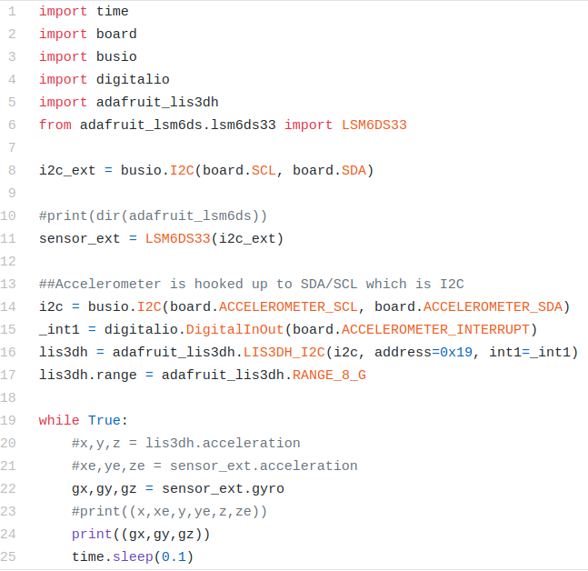
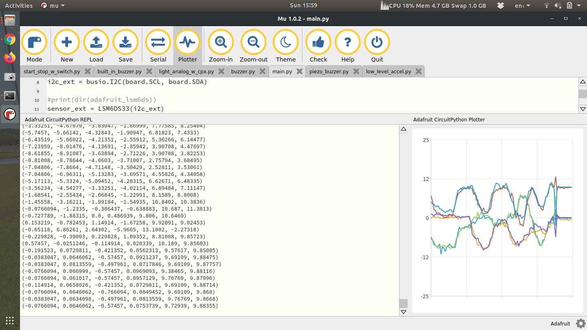
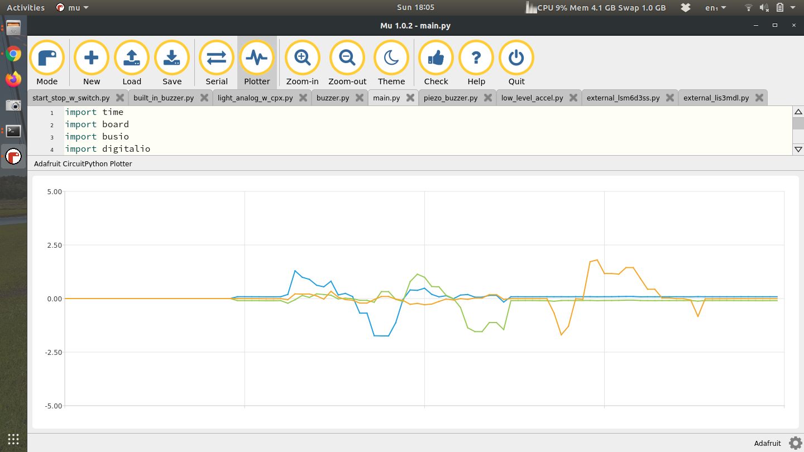
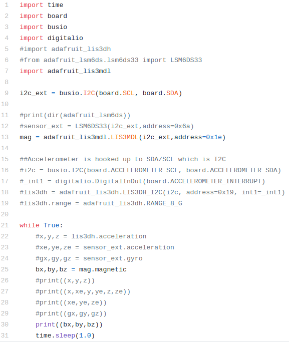

Section 17.3 Getting Started
In this lab we’re going to use this an external sensor to measure angular velocity and the magnetic field of the surrounding environment.

The sensor above is the LSM6DS33+LIS3MDL[34]. You basically have 2 separate microchips in one. The first (LSM6DS33) is a 3-axis accelerometer and 3-axis rate gyro. The first measures acceleration and the second measures angular velocity. The LIS3MDL is a 3-axis magnetometer which measures magnetic fields. The three of these sensors put together (accelerometer, rate gyro, magnetometer) is called an IMU (Inertial Measurement Unit). It’s actually possible to measure roll and pitch of an airplane and heading using the magnetometer. Combining the angular velocity of the rate gyro can create a complete attitude estimation algorithm for spacecraft. This sensor does not come standard in the current iteration of the kit. You can purchase one on Adafruit for only $10 at the time of this writing. The interesting thing about this device is that you can actually purchase the LSM6DS33 and LIS3MDL separately but this breakout board has both chips on board. The goal of this lab is not necessarily to use this specific sensor but to understand IMUs and I2C protocol. Most if not all breakout boards on the Adafruit website use I2C communication. You’ll know if the breakout board uses I2C if you find SDA/SCL pins on the board. It will also say it in the quick description of the sensor.

When you open the packaging of this breakout board you’ll notice that the header pins are missing. First you’ll need to cut a row of 4 and 6 for the top and bottom side of the board and solder the header pins to the sensor. If you’re taking my class I can solder this for you or teach everyone about soldering during a lecture session of class. If you are taking this class elsewhere you have two options: try and find someone who can solder this real quick (only takes about 5 minutes) or buy your own soldering iron and try to solder yourself. Once the device is soldered you can "plug" it into a breadboard. The wiring for this system requires 4 wires. The figure below shows the IMU connected to Feather M4 (Courtesy of Bryan Siepert)[32].

The only difference between the wiring diagram above and the CPX/CPB is that you will be using 4 alligator clips. The rest is straightforward. You need 3.3V to run to VIN, GND to GND and then SDA to SDA and SCL to SCL.

The photo above uses a combination of alligator clips and male to male wires into a breadboard. The red alligator clip is connected to the 3.3V pin on the CPB and then also connected to the red male-male wire which is connected to the VIN pin on the IMU. The black alligator clip is connected to the GND pin on the CPB and also connected to the brown male-male wire which is connected to the GND pin on the IMU. The blue alligator clip is connected directly to the SDA pins on both the CPB and the IMU. The white alligator clip connected to the yellow male-male wire which is connected to the SCL pins on both the CPB and the IMU. Recall that SDA and SCL are external pins for I2C. In the accelerometer lab we used the internal I2C pins to access the accelerometer (See Subsection 14.5.4). In this lab we’re going to use the external I2C pads to connect different I2C sensors.
Once you have the circuit wired and soldered it’s time to work on software. First, you want to make sure you have your Circuit Python UF2 up to date[30]. In this example I’m using the 6.X version. Once I updated my UF2 I also updated my Circuit Python Libraries (See Section 7.2 for help on installing extra modules on your CPX/CPB)[30]. The specific modules I needed for this lab were:
-
adafruit_bus_device
-
adafruit_register
-
lis3mdl
-
lsm6ds33
Once you have the necessary modules you can run some example code. The Adafruit Learn page has a tutorial for the LSM6DS33[32]. The problem with the tutorial is that it seems like it was written for the Raspberry or some other microcontroller. As such I had to find some example code on Adafruit’s Github[33]. After following both tutorials I was able to make my own script and upload it to my Github[33]. Note that it’s a good exercise when attaching I2C devices to run a scan on all connected I2C devices to make sure you can see the device and that you have the correct address (See Section 7.4).

In the code above lines 1-6 import all the modules with line 5 importing the accelerometer on board the CPX and line 6 importing the external sensor wired up to SDA and SCL. Line 8 creates an I2C object using the SDA and SCL pins from the alligator clips and line 11 creates the sensor object. I also include lines 14-17 to include the onboard accelerometer. Notice I can access both sensors no problem. In the while loop line 20 checks the accelerometer on the CPX, line 21 checks the accelerometer on the breakout board and line 22 checks the angular velocity on the breakout board. Lines 23 and 24 print to serial and output to the plotter. Note that some lines are commented out because I wanted to try one thing at a time. With both accelerometers printing to the Plotter I could move the CPX and the breakout board in unison and get the following output.

Notice that there are 6 numbers printed and 6 lines on the plotter. Both the CPX and the breakout board have little XYZ cartesian coordinate systems. I had to line them up properly before I started moving them. My suggestion would be for you to get some hot glue or 3M tape and place both breakout board and CPX on some sort of hard material like plywood, masonite, or even a cutting board. Anything to keep everything together.
Once you’ve done this, try uncommenting the line of code that prints the angular velocity. When I do that and move the breakout board around I can measure the angular velocity of each axis. The units are in radians per second but it’s pretty obvious just from the magnitude of the graph.

The final part is to get the LIS3MDL (magnetometer) to work. The starting point for me was the Adafruit Learn page, along with the simple example from Adafruit’s Github. After that I was able to create my own code[33][32]. The only difference in your code is that the address will be 0x1c instead of 0x1e.

The code is almost identical to the code before except all the LIS3DH and LSM6DS33 code is commented out. Instead I have code to grab the magnetometer (LIS3MDL) at address 0x1E. Line 25 then calls the magnetometer and prints it.
Recall that the accelerometer can be used to measure roll and pitch (See Subsection 14.5.4). By combining the magnetometer in this IMU, it’s possible to get the compass heading of the sensor.
\begin{equation}
\psi = tan^{-1}\left(\frac{\bar{\beta}_z s_{\phi} - \bar{\beta}_y c_{\phi}}{\bar{\beta}_x c_{\phi} + \bar{\beta}_y s_{\theta}s_{\phi} + \bar{\beta}_z c_{\phi}s_{\theta}}\right)\tag{17.3.1}
\end{equation}
In the equations above, \(\beta\) is the magnetic field along all 3 axes. Again shorthand is used for cosine and sine functions and the derivation is left for another course entirely (See Aerospace Mechanics)[33].